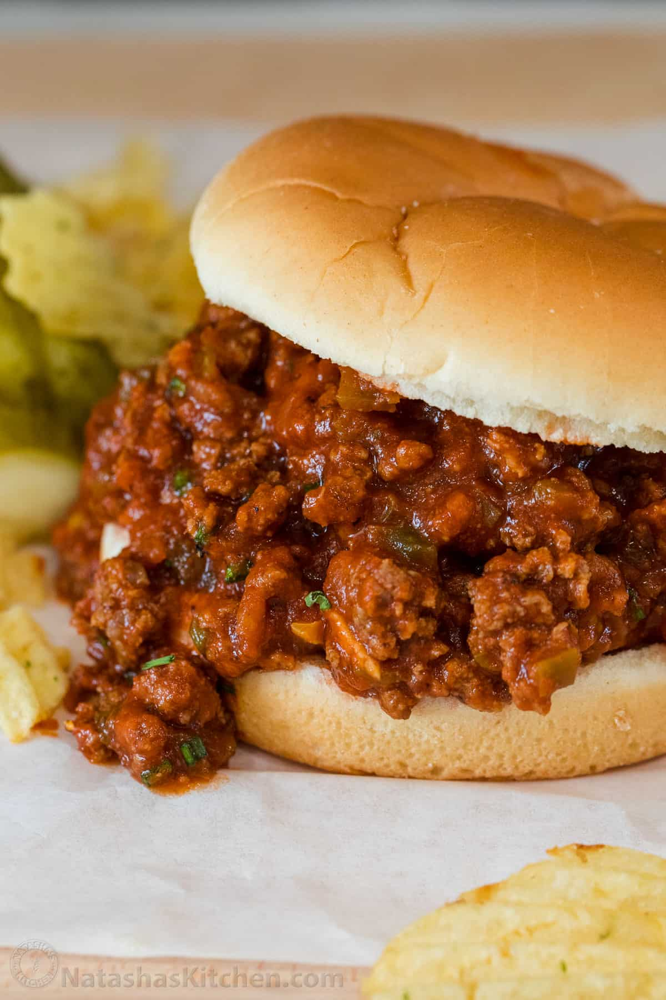

Saucy, beefy and so satisfying. We’re convinced this is the BEST recipe for a homemade Sloppy Joe. Ground beef in a hearty tomato sauce served on toasted hamburger buns is a great idea for lunch or dinner.There’s no match for a warm homemade sandwich, from Grilled Cheese to our famous Philly Cheesesteak. This Sloppy Joe Recipe is definitely at the top of our list.
- Beef
- Bell Pepper
- Onion
- Garlic
- Tomato Sauce
- Worcestershire sauce
- Yellow Mustard
- Brown Sugar
- Chop veggies – Finely chop the onion and green bell pepper.
- Make sauce – In a bowl, combine worcestershire sauce, yellow mustard, water, brown sugar, and tomato sauce.
- Saute beef – In a deep skillet, heat oil over med/high heat. Add the ground beef and break up as it is being cooked. Season with salt and pepper and add in the finely chopped onion and green pepper. Cook until vegetables are tender.
- Add sauce – Add in the garlic and cook until fragrant. Pour in the sauce and cook over medium high heat until the sauce comes to a soft boil.
- Simmer – Reduce the heat to low and cook for 10 minutes, add more salt and pepper if needed.
- Serve – spoon the saucy beef mixture on toasted buns and serve as sandwiches.
Back to Homepage